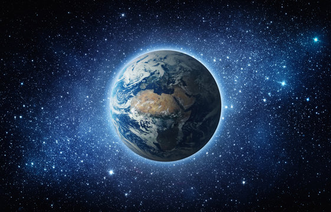
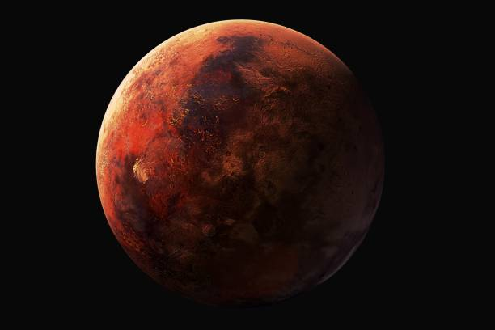
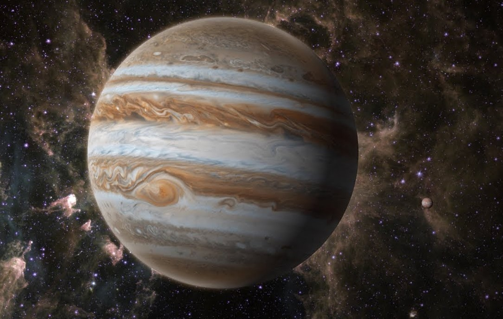
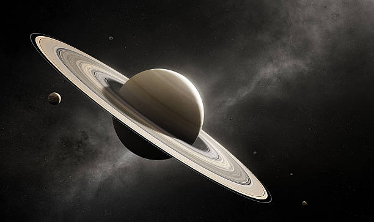

created on 8th april 2024 by sujal dangi
phase 8 mohali
| Planet | Air | color |
|---|---|---|
| Earth | Good | Blue |
| Mars | Avg | Red |
| Jupiter | Bad | Brown |
| neptune | Bad | Blue |
| Saturn | Bad | Golden |
Earth is the third planet from the Sun and the only known celestial body to support life. With a diverse range of ecosystems, including oceans, forests, deserts, and polar region s, it's often referred to as the "Blue Planet" due to its abundant water. Earth has a complex atmosphere composed primarily of nitrogen and oxygen, which sustains life and moderates its climate. Its surface is characterized by continents, oceans, and diverse geological features, including mountains, valleys, and plains. Earth orbits the Sun once every 365.25 days, giving rise to seasons, while its rotation on its axis causes day and night cycles. It is home to a vast array of organisms, including humans, and is the only place in the universe known to harbor life. Understanding Earth and its interconnected systems is crucial for the well-being of all living organisms on the planet.
Mars, often called the "Red Planet," is the fourth planet from the Sun in our solar system. Its distinctive reddish appearance comes from iron oxide (rust) present on its surface. Mars is smaller and colder than Earth, with a thin atmosphere primarily composed of carbon dioxide. It has surface features resembling both Earth's rocky landscapes and the moon's cratered terrain. Prominent features include Olympus Mons, the largest volcano in the solar system, and Valles Marineris, a vast canyon system. Evidence suggests that Mars once had liquid water on its surface, indicating the potential for ancient habitability. Today, Mars is a focus of scientific exploration, with numerous missions sent to study its geology, climate, and potential for past or present life.
Jupiter is the largest planet in our solar system, known for its immense size and distinct banded appearance. It is the fifth planet from the Sun and is primarily composed of hydrogen and helium, making it a gas giant. Jupiter has a thick atmosphere with bands of clouds that swirl around its equator, driven by powerful jet streams. The planet is famous for its Great Red Spot, a massive storm that has been raging for centuries. Jupiter has a strong magnetic field, and it is orbited by a large number of moons, with the four largest being known as the Galilean moons: Io, Europa, Ganymede, and Callisto. These moons are of particular interest for their diverse geological features, including volcanic activity on Io and the possibility of subsurface oceans on Europa and Ganymede. Jupiter plays a crucial role in shaping the architecture of our solar system, influencing the orbits of other planets and asteroids through its immense gravitational pull. It has been the subject of numerous scientific missions, including spacecraft like the Galileo probe and the Juno spacecraft, which have provided valuable insights into the planet's composition, atmosphere, and magnetic field.
Saturn is the sixth planet from the Sun in our solar system, known for its stunning rings and distinct golden hue. It is a gas giant like Jupiter, primarily composed of hydrogen and helium. Saturn's most prominent feature is its expansive ring system, consisting of countless icy particles that orbit the planet's equator. These rings are made up of billions of particles ranging in size from tiny dust grains to larger boulders, and they provide a breathtaking spectacle when viewed from Earth. Saturn has a thick atmosphere with bands of clouds, much like Jupiter, but its colors are more subdued, appearing pale yellow or golden. The planet also features a hexagonal-shaped storm at its north pole, a unique and enigmatic phenomenon. Saturn has a diverse family of moons, with over 80 known satellites. The largest moon, Titan, is particularly notable for its thick atmosphere and hydrocarbon lakes and rivers, making it a target of interest for scientific study. Saturn's rings, moons, and dynamic atmosphere make it a fascinating subject of scientific exploration. Spacecraft like the Cassini-Huygens mission have provided valuable insights into Saturn's structure, composition, and moons, enhancing our understanding of this captivating planet.
